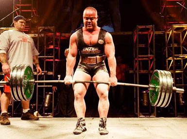
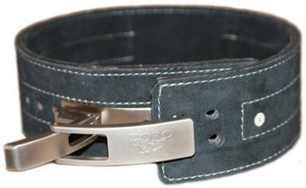

Спортивная экипировка на зиму
05/01/2016, 08:56
Просмотров: 155 | Комментариев: 20
Одежда для верховой езды
05/01/2016, 08:56
Просмотров: 155 | Комментариев: 20
Экипировка для пауэрлифтинга
05/01/2016, 08:56
Появление экипировки для пауэрлифтинга связано с необходимостью предотвратить получение травм, а также желанием увеличить рабочий вес в каждом упражнении на 5-10 кг.
Пауэрлифтинг – очень серьезный спорт, поэтому вы должны обращать особое внимание на выбор высококачественной экипировки для пауэрлифтинга, которая играет в не последнюю роль в достижении цели.

Изначально появление спецодежды и оборудования для пауэрлифтинга было обосновано необходимостью предотвратить получение травм и желанием увеличить рабочий вес на 5-10 кг в каждом упражнении.
Современная экипировка значительно расширила свои возможности: теперь спортсмен благодаря грамотному выбору одежды и аксессуаров может увеличить вес в среднем на 50 кг в каждом упражнении, а максимальная цифра достигает 150 кг! Благодаря такой экипировке пауэрлифтинг стал еще зрелищнее.
Экипировка для пауэрлифтинга включает бинты на запястья и на колени, комбинезон для приседаний, трико для жима, майка для жима лежа, комбинезон для становой тяги и специальная обувь (ботинки для становой тяги, штангетки).
Экипировка – это не просто одежда для занятий на тренировке, это одежда, обувь и дополнительные приспособления, которые применяются во время подъема штанги и разрешены федерациями для использования во время соревнований. Главная задача экипировки для пауэрлифтинга – предупреждение травмы при подъеме большого веса, а также помощь спортсмену во время упражнения.
Современная экипировка для пауэрлифтинга позволяет увеличить вес в среднем на 50 кг в каждом упражнении, а максимальная цифра достигает 150 кг!
Экипировка разделяется по типам упражнений пауэрлифтинга, для которых она предназначена:
Экипировка для приседаний включает в себя комбинезон (костюм, трико) для приседаний, коленные и кистевые бинты, пояс и штангетки.
Экипировка для жима лежа – это борцовка (трико для жима лежа, рубашка (майка) для жима лежа, кистевые бинты и штангетки.
Экипировка для становой тяги - комбинезон (костюм, трико) для тяги, пояс, коленные бинты и специальная обувь с резиновой подошвой без каблука. Такая обувь позволяет удерживать вес на пятке и не наклоняться вперед. Как правило, пауэрлифтеры используют специальные ботинки для становой тяги, кеды, чешки или борцовки.
Зачем нужны специальные майки для жимов и обувь? Почему нельзя тренироваться и выступать в обычных кроссовках и футболке? Давайте подробнее остановимся на наиболее важных элементах экипировки пауэрлифтеров.
Комбинезон для приседаний

Во время выполнения приседаний в тяжелой атлетике у спортсмена есть три слабых места: голеностоп, спина и колени. Их можно подстраховать, используя во время выполнения упражнения также экипировку для пауэрлифтинга: штангетки, пояс и бинты. Однако техника выполнения приседаний в пауэрлифтинге создает и другие слабые места.
Изменение положения ног дает дополнительную нагрузку на паховую область. Если штанга очень тяжелая, то в нижней точке упражнения есть вероятность сильно просадить низ, что может повлечь за собой серьезную травму связок. Именно для предотвращения этих травм используют специальный комбинезон из жесткого материала с хорошими прочными швами.
Такая экипировка для пауэрлифтинга жестко обхватывает спину, таз и верх бедра спортсмена, снижая подвижность тазобедренного сустава. Благодаря этому во время просаживания действует не только сила спортсмена, но и сила упругости материала, которая позволяет предотвратить получение травмы и улучшить результат пауэрлифтера.
Рубашка
Рубашка помогает минимизировать травмы плеч и груди. С виду это обычная футболка из очень прочной и эластичной ткани, однако, стоит рассмотреть ее внимательнее, как становится заметно, что в области груди она значительно сужена. Такая рубашка плотно облегает тело пауэрлифтера, немного «сворачивая» плечи вперед. Во время жима, когда нужно опускать штангу на грудь, материал рубашки в области груди атлета принимает на себя значительную нагрузку. При опускании он растягивается и, сжимаясь, помогает пауэрлифтеру сорвать штангу с груди.
Пояс для пауэрлифтинга

Широкий кожаный пояс позволяет атлету предотвратить травмы связок поясничного отдела позвоночника. Эта экипировка для пауэрлифтинга также позволяет увеличить вес во время выполнения приседаний, жима от груди и становой тяги. Когда на вас этот пояс, значительно увеличивается внутрибрюшное давление, поэтому нагрузка на нижний отдел позвоночника снижается примерно на 50%. Это высвобождает некоторую часть мышечной силы, что позволяет увеличить рабочий вес.
Коленные бинты
Основная задача бинтов – это защита от травм коленных суставов. Во время выполнения приседаний бинты также помогают встать. Качество этой помощи будет зависеть от вашей техники, и конечно, от типа и качества используемых бинтов.
Кистевые бинты для пауэрлифтеров
Бинты предназначены защитить суставы и связки от травм. Они необходимы не только в спорте, но и фитнесе во время проведения силовых тренировок с серьезным отягощением. Эластичная фиксация вокруг сустава позволяет стабилизировать рабочую конечность, что позволяет застраховать ее от разрывов и растяжений во время тренировки.
Желательно использовать бинты только во время рабочих подходов и снимать их на период отдыха. Это позволит сохранить нормальный кровоток периферических кровеносных сосудов.
Для предотвращения болей в запястьях можно использовать напульсники. Они похожи на бинты, только немного короче, тем не менее, по жесткости они ни в чем не уступают.
Штангетки для пауэрлифтинга
Штангетки – это обувь из жесткой кожи, которая шнуруется по все длине, туго фиксируя ногу. Она имеют небольшой каблук и жесткую подошву, что позволяет не заваливаться назад.
Просмотров: 155 | Комментариев: 20